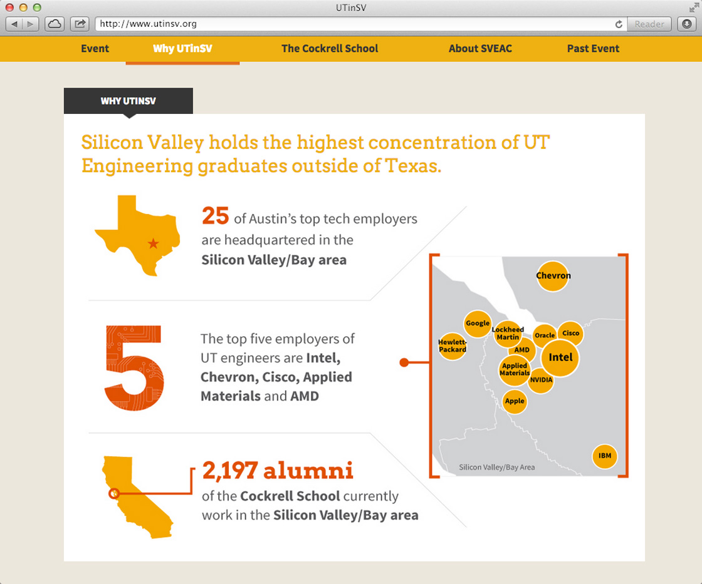

<div class="content-wrapper clearfix">

    <article class="content">

        <div class="row">
            <div class="col span_1"></div>
            <div class="col span_4">
                
                <!--  -->
            </div>
            <div class="col span_1"></div>
        </div>

        <div class="row">
            <div class="col span_6 center">
                <h1>UT Austin in Silicon Valley</h1>
                <div class="tagline">Austin's booming entrepreneurial scene means more opportunities for partnership with Silicon Valley.</div>
            </div>
        </div>

        <div class="row">
            <div class="col span_1"></div>
            <div class="col span_4">
                
            </div>
            <div class="empty col span_1"></div>

            
        </div>

        <div class="row">
            <div class="col span_4">
                <h2>Project Details</h2>
                <p>Silicon Valley holds the highest concentration of UT Engineering graduates outside of Texas. UTinSV seeks to engage and build partnerships with alumni and companies in the Bay Area.</p>
                <a href="http://utinsv.org/" target="_blank">View site</a>
            </div>
            <div class="col span_2 right">
                <h2>My Role</h2>
                <ul>
                    <li>Art Direction</li>
                    <li>UI/UX</li>
                </ul>
            </div>
        </div>    

    </article>
</div>
